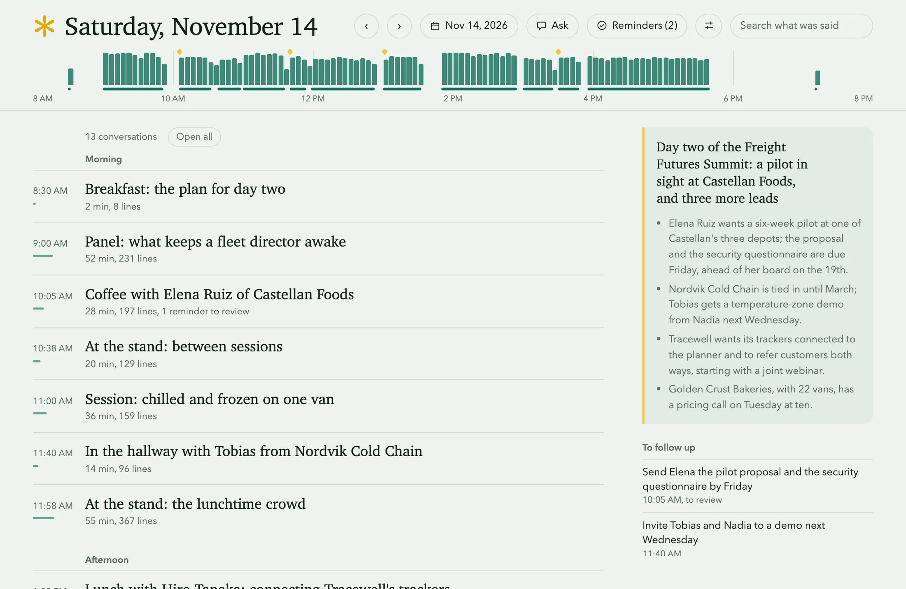
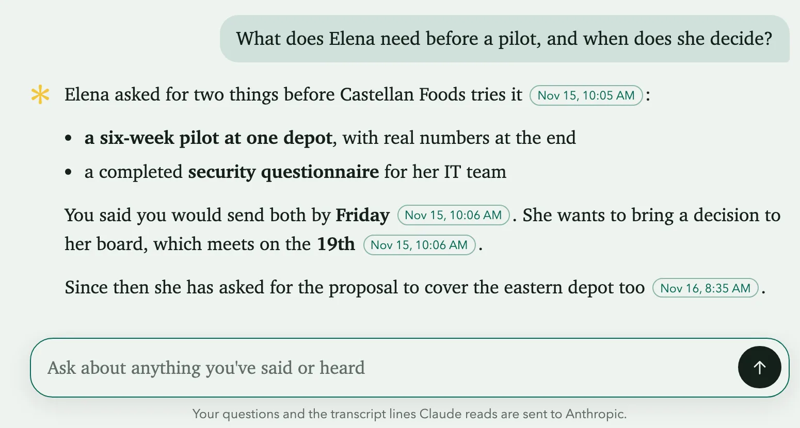

Limitless shuts down on December 1. Your pendant doesn’t have to.
Limitful is free, open-source software that keeps the Limitless Pendant working. It pulls recordings off the pendant over Bluetooth, transcribes them on your computer, and gives you a Lifelog to read, search, listen to and ask questions of. No account. No subscription.
Limits apply. All of them are listed at the bottom of this page.

A day in the Lifelog. Every conversation shown on this page is made up.
The app Limitless is taking away, kept on your own computer
Limitful talks to the pendant directly. Nothing goes through Limitless, so nothing stops working when its servers do.
Every day, recapped
Each day is a list of conversations with titles, a summary and the transcript, each speaker in their own colour. A recap says what the day came to, and the things you said you would do are pulled out as reminders.
Click any sentence to hear it.

Find the moment
Search everything that was said, by the exact words or by meaning. Press ⌘K to jump to “yesterday”, “12 nov” or any line that mentions the pilot.
Search runs on your computer. Nothing is sent anywhere.

Ask it anything
“What does Elena need before a pilot, and when does she decide?” Answers are written from your transcripts, and every claim links to the line it came from, so you can hear the moment for yourself.

- Syncs by itself
- On demand, or every two minutes from login on macOS, with no terminal open.
- Transcribes on your machine
- Speech becomes text with Whisper, running locally. Deepgram is there if you would rather.
- Brings your history with it
- Imports your Limitless export: transcripts, audio and reminders.
- Runs the pendant
- Battery, storage, the light, pause, pair and unpair, from Settings or the command line.
- Plain files you own
- Every day is saved as Markdown and the audio as Ogg, in a folder on your disk.
- Free and open source
- MIT licence. Read it, change it, help build it.
See it in 75 seconds
From pairing the pendant to asking a question of the day.
With captions and music. The conversations in it are made up.
What leaves your computer? Nothing, unless you say so.
Syncing, transcription, search and playback all happen on your machine. Two choices in Settings send data out, and both are off until you make them.
| If you choose | What is sent | To |
|---|---|---|
| Nothing (the default) | Nothing | No one |
| Claude for summaries and Ask | The text of conversations, your questions, and what Claude reads to answer them | Anthropic |
| Deepgram for transcription | The audio of new recordings | Deepgram |
| Ollama for summaries | Nothing: the model runs on your computer | No one |
Dec 12026: the day Limitless ends its service and deletes the data it holds.
What to do before December 1
- Export your data from LimitlessAsk for your export while the service is still up. After December 1 it is gone. Limitful reads the zip as it comes.
- Let the Limitless app sync one last timePairing with the pendant’s button resets it and clears the audio stored on it. With a USB cable you can pair without erasing.
- Install Limitful and importA setup guide pairs the pendant, does the first sync and brings your export in. From then on the pendant answers to you.
Install it
Four lines in a terminal, then everything happens in your browser.
$ git clone https://github.com/andreibondarev/limitful.git $ cd limitful $ uv sync $ uv run limitful serve
No pendant? Look around with made-up conversations:
$ uv run limitful demo $ uv run limitful serve --data-dir ~/Limitful-demo
The fine print
Limits apply. These are all of them.
- It runs on a computer, not a phone.You install it from a terminal and use it in a browser on the same machine.
- macOS is the tested path.It runs daily against one real pendant on a Mac. Linux and Windows are not yet verified.
- Summaries and Ask need a model.Claude, with your own API key, or Ollama on your computer. Syncing, transcripts, search and playback work without either.
- Pairing by the button erases the pendant.It is a factory reset. Sync with Limitless first, or pair over USB to keep what is on it.
- One connection at a time.The pendant talks to one device. While your phone holds it, your computer cannot see it.
- The first sync is a big download.The speech model is 1.6 GB, fetched once.
- It is early.Working, and used every day, but young. The roadmap says what is next.
- It is not Limitless.Limitful is an independent project, not affiliated with or endorsed by Limitless or Meta.